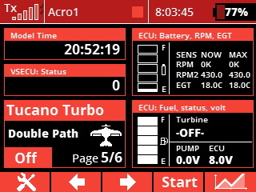
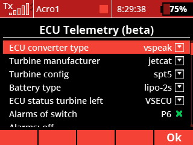
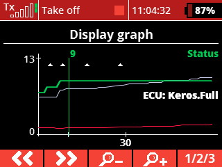

Turbin-ECU-LUA-skript - støtter mange turbinprodusenter
Stille / svart-cockpit-alarmer (lyd/varsel/vibrasjon/logg) som er tause til de trengs, for turbinstatus, RPM, RPM2, PUMPV, BATT, FUEL, EGT og flammeslukk. Dashbordvisning av alle turbinparametere med visualisert drivstoff og batteri. Ideen er ingen alarmer på bakken, kun alarmer når det virkelig gjelder, for å hjelpe deg å redde den kostbare modellen din. Rask oppsett basert på valg av konfigurasjonsfiler med beste praksis.
Denne ene Lua-appen erstatter minst 20 separate alarmoppsett i senderen (høy/lav-alarmer per sensor for RPM, akselturtall, EGT, ECU-spenning og pumpespenning, drivstoffnivåterskler, feil på drivstoffsensor, ECU-frakoblet-vakt og hver navngitt turbinstatus) med én konfigurerbar app med grafisk grensesnitt. Hver alarm logges også til den vanlige Jeti-flyloggtidslinjen på modellen du bruker den på, noe som gjør etteranalyse av alarmer mye enklere.





MERK: Du trenger ikke redigere konfigurasjonsfiler; standardfilene for turbinen din er satt opp med beste praksis rett ut av boksen. Bare velg ECU-konverter, turbintype, batteripakke, ECU-sensor og gass-kuttbryter, så har du den mest avanserte turbinovervåkingen som er tilgjengelig for RC-turbinmodeller i dag.
Støtter Vspeak ECU-konverter (min personlige favoritt blant ECU-konvertere), Digitech ECU-konverter, JetCat ECU-konverter og eksperimentell støtte for CB-Electroniks- og Xicoy-konvertere (trenger testere). Produsenter av turbin-ECU-konvertere er velkomne til å kontakte meg for å legge til støtte for utstyret sitt. Ideen er å støtte alle turbiner og turbin-ECU-konvertere som finnes - med
alarm - ECU frakoblet GUI - konfigurasjon alarm - RC av alarm - akselturtall lavt visning - ECU batteri- og drivstoffindikatorer visning - ECU frakoblet
alarm akselturtall lavt flylogg - Keros full normal - runreg4 status - Keros full
Støtter følgende ECU-konvertere og turbiner:
- Vspeak - FW 1.0 - Kingtech
- Vspeak - FW 1.0 - AMT
- Vspeak - FW 1.0 - JetCat
- Vspeak - FW 2.2 - Hornet
- Vspeak - FW 2.1 - Jakadofsky
- Vspeak - FW 2.1 - evoJet / Pahl
- Vspeak - FW 1.1 - PBS
- Digitech - FW 1.2 - Evojet
- Digitech - FW 1.2 - Graupner G-Booster
- Digitech - FW 1.2 - Hammer
- Digitech - FW 1.2 - Hornet
- Digitech - FW 1.2 - JetCat
- Digitech - FW 1.2 - Kingtech g1
- Digitech - FW 1.2 - Kingtech g2
- Digitech - FW 1.2 - Lambert
- Digitech - FW 1.2 - Xicoy v6
- Digitech - FW 1.2 - Xicoy v10
- JetCat ECU - JetCat
- Kingtech ECU - Kingtech g1
- Kingtech ECU - Kingtech g2
- Kingtech ECU - Kingtech g3
- Kingtech ECU - Kingtech g4
- Kingtech ECU - Kingtech g5
- CB-Electroniks - FW ?? - Xicoy v10 (Eksperimentell)
- CB-Electroniks - FW ?? - Xicoy v6 (Eksperimentell)
- CB-Electroniks - FW ?? - JetCat (Eksperimentell)
- Xicoy - FW ?? - Xicoy v6 (Eksperimentell)
- Xicoy - FW ?? - Xicoy v10 (Eksperimentell)
- Xicoy - FW ?? - Xicoy vX (Eksperimentell)
- ECU-simulator (programvarebasert testkilde - ingen maskinvare nødvendig) - AMT, evoJet, Hornet, Jakadofsky, JetCat, PBS
Turbinprofiler for Behotec, Colibri og Orbit er også inkludert og kan utvides til konvertermappinger.
Funksjonalitet for turbinstatus:
- Venter til alle sensorer er tilkoblet, og holder deretter en nådeperiode på 30 sekunder for å stabilisere all telemetriinngang før alarmer aktiveres
- Konfigurasjonsfiler for hvilke ECU-statuser som leses opp med stemme, vises på skjermen, logges til flyloggen og vibrerer (ikke for -16)
- Alarmer lyd/vibrasjon/varsel slås av med separate brytere (anbefalt å bruke samme bryter som gasskutt for turbinen; da er alarmene på når turbinen er armert)
- Statusalarmer gis kun ved statusendring
- Konfigurerbart hvilken turbinstatus som har lydalarmer, vibrasjonsalarmer (ikke for -16) eller meldingsalarmer.
- Status - Individuelt konfigurerbare parametere i konfigurasjonsfilene for HVER turbinstatus (ikke for -16)
- Status - Lydalarm, mulighet til å endre lydfil. Konfigurerbart (ikke for -16)
- Status - Vibrasjonsrespons: hvilken stikke, hvilken vibrasjonsprofil, på/av. Konfigurerbart (ikke for -16).
- Status - Skjermvarsel på/av - viser statusteksten som et varsel. Logger også turbinstatusen til den vanlige Jeti-flyloggtidslinjen, slik at du etter flyturen kan se nøyaktig hvilke statuser og alarmer som oppstod (dette er kjempekult). Konfigurerbart (ikke for -16).
- 168 lydfiler inkludert med alle statuser og alarmer.
De vanlige alarmene (RPM, RPM2, EGT, ECUV, drivstoffnivå), men enklere oppsett
Noen alarmer som lav RPM, lav RPM2, lav pumpespenning og lav temperatur aktiveres ikke før den lave terskelen er overskredet én gang. Da unngår du irriterende lavalarmer før turbinen går, men de slås også av av den globale bryteren.
- Turbin-RPM høy
- Turbin-RPM lav - kun aktiv etter at RPM har overskredet terskelen "Turbin-RPM lav"
- Akselturtall høyt
- Akselturtall lavt - kun aktiv etter at akselturtallet har overskredet terskelen "Akselturtall lavt"
- ECU-spenning høy
- ECU-spenning lav - kun aktiv etter at ECU-spenningen har overskredet terskelen "ECU-spenning lav"
- EGT høy
- EGT lav - kun aktiv etter at EGT har overskredet terskelen "EGT lav"
- Pumpespenning høy
- Pumpespenning lav - kun aktiv etter at pumpespenningen har overskredet terskelen "Pumpespenning lav"
- Drivstoffalarmer standardoppsett: 75% (lyd), 50% (lyd), 30% (lyd), 20% (lyd og vibrasjon), 10% (lyd og vibrasjon), 5% (lyd og vibrasjon)
- Drivstoffalarmer kan tilpasses i konfigurasjonsfilen: ved hvilket % nivå du vil ha alarm, lydfil, vibrasjonsprofil og melding som skal vises og logges.
- Drivstoff - Automatisk avlesning av tankstørrelse fra ECU (vises i telemetrivinduet)
- Varsel om drivstoffsensorfeil hvis drivstoffsensoren går under 0
= Drivstoff = Ingen konfigurasjon nødvendig på Vspeak med JetCat, Hornet og alle Digitech - for resten må TankSize angis
- Beregner prosenter fra intervallet mellom høy- og lav-konfigverdiene. Alarmer gjentas kun hvert 30. sekund hvis feiltilstanden vedvarer
Andre alarmer
Overvåker at alle sensorer er tilkoblet og gir en frakoblet-alarm (fordi konverteren ikke virker, ECU ikke virker eller ECU er uten strøm).
Konfigurasjonsmuligheter
- Egen tilpassbar fil for hver ECU-konvertertype (sensor- og statusmapping til et felles format)
- Egen tilpassbar fil for hver turbintype med beste-praksis-konfigurasjon.
- Egen tilpassbar fil for statusene til hver turbintype med beste-praksis-konfigurasjon. (ikke for -16)
- Egen tilpassbar fil for hver batteripakketype med beste-praksis-konfigurasjon. (LiPo 1s-6s, LiFe 1s-6s, A123 1s-6s, NiCd 6s-12s) (ikke for -16)
- Egen konfigurasjonsfil for oppsett av drivstoffnivå med beste-praksis-konfigurasjon.
- Visuell telemetrivisning
Annet
Drivstoffmåler, pumpespenning, ECU-spenning og status i dobbeltvindu, basert på kode fra "ECU data display" for Orbit laget av Bernd Woköck
Batterimåler, RPM, RPM2, EGT og status i dobbeltvindu, basert på kode fra "ECU data display" for Orbit laget av Bernd Woköck (ikke for -16)
Eksperimentell rund RPM- og TEMP-måler (veldig kul, men ikke testet) (ikke for -16)
Eksperimentell fullskjerm-GUI (kun for -24)
Versjonsmerknader
- 3.0 - Den native Kingtech ECU-konverteren dekker nå Kingtech g1-g5, lagt til støtte for Xicoy vX og den native JetCat-konverteren, utvidede batteripakker (LiPo/LiFe/A123 1s-6s og NiCd 6s-12s), fullstendig lokalisert brukergrensesnitt på engelsk, tysk, fransk, spansk, italiensk og norsk (en, de, es, fr, it, no), flere lydfiler (168) og herding mot falske alarmer (lavalarmer armeres kun etter en reell sensoravlesning, 30 s nådeperiode ved oppstart, 30 s mellom gjentakelser).
- 2.6 - Støtte for Vspeak Kingtech-konverter og Kingtech-konverter; ECU-konverter-frakoblet-alarmen respekterer nå oppsettbryterne (ingen alarm hvis den brukes på samme bryter som turbin av), mange nye lyder og noen justeringer av standard konfigurasjonsfiler